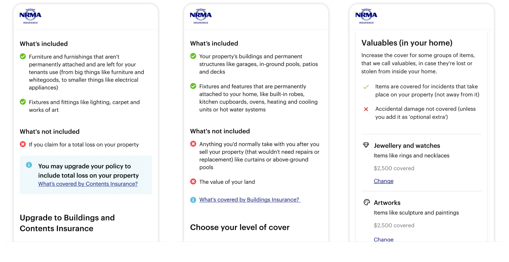

Background: We are embarking on a multi-year digital transformation program to amalgamate all brands and products onto a single omni-channel platform. The strategic goal is to provide a uniform experience across the company by sharing common foundations, underwriting and design across our offerings.
By starting from scratch, the opportunity to establish design standards that are uniform, flexible and scalable across the entire ecosystem was evident. As a result, our success in designing, testing and deploying common patterns and interaction models has allowed us bring new products online exponentially faster through each iteration.
Solving product agnostic problems at a system level
Negative scenarios framework
Insurance products are infinitely complex because accurately pricing risk takes significant amounts of data and all customers have different needs and levels of risk appetite.
We found: Solving these issues in isolation meant our solution was narrow and superficial. We reframed our problem as a part of framework and solved each problem in unison.
Guiding principals we developed with business and technical teams:
- 1. Before data is sent to the backend, we clean and validate the data in the front-end
- 2. We will not be able to cater for all types and subsets of underwriting issues digitally, therefore there will always be some level of assisted human intervention
- 3. Where an underwriting issue doesn't meet our product standards, we should not refer customers to our call centres
- 4. Before we decline policies, we should check to see if there are more suitable products that may meet customer needs
- 5. If a policy variation exists, like a fire in the local area. We need to alert customers immediately

Reusable design patterns
The standards we introduce are fluid, repeatable and we tested to a minimum AA accessibility standard requirements. Users learn our interaction models and can expect the same experiences from all our brands and products. These patterns are used across our car, travel, landlord, residential strata insurance and more. Our designs are tried, tested and propogated across our whole ecosystem.
Research themes
Research theme 1: simplify language and explain insurance concepts
A diverse mix of understanding of finance and insurance constructs is baked into our products. I worked with content-writers, product and the legal team to simplify insurance terms and explain concepts in plain language. Below are some terminologies that caused friction for customers.
Research theme 2: origins of data (privacy)
Intimate details of the people’s home are surfaced in our products. Our customers worried about the origins of this data and evidentally concerned about cybersecurity more than ever. Our takeaway was that we should always tell customers where our data came from.
Research theme 3: transparency and trust
Customers are often sent to product disclosure statements (PDS) PDF to sift through difficult to understand legal documents. This nurtures distrust and a distasteful customer experience. Wherever we could, we tried to articulate complexities directly on the page in lieu of linking out to PDF’s.
